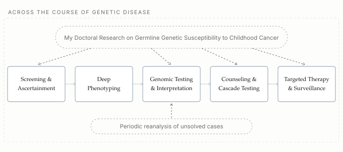

I'm applying for a combined Pediatrics and Medical Genetics residency after completing my medical training through the Ottawa-Shanghai joint medical program and spending my PhD years at USC studying inherited cancer risk in children. My research studied California's archived newborn blood spots for germline genetic susceptibility in childhood cancer.
What continues to draw me toward clinical care is the chance to help families navigate uncertainty, answering parents' questions about what a diagnosis means for their children, staying with them as the picture becomes clearer, and finding the best management together. Pediatrics has been the constant throughout my journey, and I'm ready to bring what I've learned from genetics back to the bedside.
